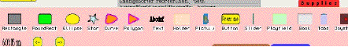
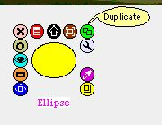
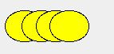
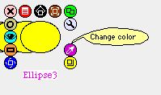
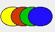
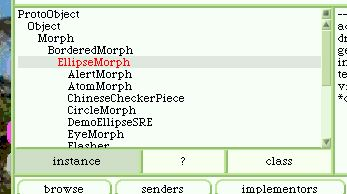
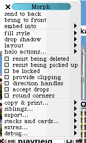
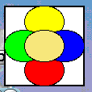

Morphs Layering
1) Manipulación directa:
Buscar en la parte inferior el tab que dice Supplies, moverlo hacia arriba

Elija Ellipse y arrastre fuera del tab.
Presione Alt click para ver el halo, elegir el botón
Duplicate, para obtener el segundo dibujo.

Seleccionar cada Ellipse , hacer que salga el halo, elegir el
gotero , cambiar los colores para ver
 La ellipse amarilla esta en la capa inferior , mientras que la azul en la superior
2) Manipulación por código:
Abrir un Workspace (COMAND K o ALT K) o de los flaps
Escribir
| e e2 e3 e4| "Declaramos las variables qiue vamos a usar
, si ya se Diego, nombres"
e _ EllipseMorph new openInWorld. "Creamos un objeto de la clase EllipseMorph"
Si queremos saber que sabe hacer este objeto, seleccionamos EllipseMorph con doble click y luego hacemos comando B, para abrir un Browser.
Si qiuerempos ver la herencia, en el Browser seleccionamos el boton hierarchy , con lo que nos aparecera el Hierarchy Browser, podemos ver que hereda de BorderedMorph, que a su vez hereda de Morph.
Con lo que conocerá todos los métodos propios, mas los de .BorderedMorph, mas los de Morph
Morph es la clase que da las bases y sustento a todo el "edificio" del actual Squeak, y es la razon del "amor / odio" de muchos.
En la categoriua geometry encontramos algunos metodos que vamos a aplicar ahora.
Escribimos en el siguiente renglon del Workspace
e2 _ e copy. "Hemos hecho una copia del objeto, Smalltalk 80 puro"
e2 center: e center +(10@0) asPoint. " le decimos al segundo objeto que se desplace 10 puntos a ls derecha con respecto a su centro"
e2 color: Color red. " le decimos al segundo objeto que queremos que su color sea rojo"
e2 openInWorld. " le decimos al segundo objeto que deseamos verlo en el mundo actual"
El código completo para producir el dibujo de las cuatro elipses coloreadas seró
| e e2 e3 e4 |
e _ EllipseMorph new openInWorld.
e2 _ e copy.
e2 center: e center +(10@0) asPoint..
e2 color: Color red.
e2 openInWorld.
e3 _ e2 copy.
e3 center: e2 center +(10@0) asPoint..
e3 color: Color green.
e3 openInWorld.
e4 _ e3 copy.
e4 center: e3 center +(10@0) asPoint..
e4 color: Color blue.
e4 openInWorld..
e5 _ e4 copy.
e5 center: e4 center +(10@0) asPoint..
e5 color: Color random.
e5 openInWorld
Todo Morph puede actuar como contenedor de otros Morphs.
Ejemplo::
si agregamos las siguientes lineas.
m _ Morph new.
m color: Color white.
m extent: 100@100.
m openInWorld.
y ejecutamos, el cuadrado blanco estara encima de las elipses y estas no se verán.
Manipulación directa:
Presione Alt click para ver el halo, elegir el botón Menu para obtener:
 Aqui seleccionamos send to back y el cuadrado quedara debajo de todas las elipses.
Seleccionando cada elipse, podremos eleguir el orden en que estaran "apiladas".. Experimentar tamben con bring to front y enbed into.
Manipulación por código:
| e e2 e3 e4 e5 m|
m _ BorderedMorph new.
m color: Color white.
m extent: 100@100.
m openInWorld.
e _ EllipseMorph new .
e center: m center.
m addMorph: e.
e2 _ e copy.
e2 color: Color red.
m addMorph: e2.
e3 _ e2 copy.
e3 color: Color green.
m addMorph: e3 .
e4 _ e3 copy.
e4 color: Color blue.
m addMorph: e4 .
e5 _ e4 copy.
e5 color: Color random.
m addMorph: e5.
Solo veremos el cuadrado y última elipse, pero con sucecivos Alt click
para ver el halo, elegir el botón Move, podremos "sacar"
las elipses "contenidas" en el cuadrado.
Otro experimento: agregar estas lineas 
m addMorph: e5.
e top: m top.
e2 bottom: m bottom.
e3 left: m left.
e4 right: m right.
Hay premio para los Smalltalkers que mejoren el cócgo, para que haga lo mismo en menos lineas, aplique colecciones , etc